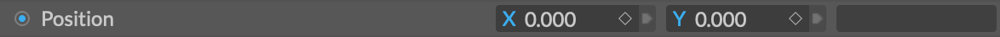

连接
简介
连接是 Cavalry 的核心功能，可用于让属性驱动其他属性。
图层与节点：
虽然 Cavalry 的界面提供基于图层的交互，但 Cavalry 在底层实际上是“基于节点”的，这意味着建立连接时，一个图层的属性数据会被直接传递给另一个图层。
可以从连接锚点点击并拖动来创建连接。连接锚点是指悬停时会变蓝的任何元素。

信息：
对于从 After Effects 转来的用户，需要注意：在 Cavalry 中建立连接并不是编写 JavaScript 表达式的快捷方式——连接是在图层之间建立的。其结果是快速的计算和出色的灵活性。
创建连接
在属性编辑器中创建连接：
- 将光标悬停在一个属性上（连接锚点图标会变为状态 2）。
- 将光标移到连接锚点图标上（图标会变为状态 3），然后点击并拖动。
- 将光标移到另一个属性上（可以连接时，“连接”会变蓝）。
- 松开鼠标。
连接起始的属性上，以及步骤 4 中放置连接的目标属性上，都会出现连接图标，表示连接已建立。
信息：
提到
id时，指的是图层属性编辑器界面标题栏中可用的连接。它是图层的输出。
在场景窗口中的操作非常相似：
- 将鼠标悬停在一个图层上（连接锚点图标会变为状态 2）。
- 将光标移到连接锚点图标上（图标会变为状态 3），然后点击并拖动。
- 将光标移到另一个图层上（可以连接时，“连接”会变蓝）。
- 松开鼠标。
- 会弹出一个窗口。
- 选择要连接到的行（属性）。
- 点击鼠标。
步骤 6 中放置连接的图层上会出现连接图标，表示连接已建立。

使用 Option/Alt 键可以同时创建到多个图层的连接：
- 创建 3 个图形（Shape1、Shape2、Shape3）。
- 创建一个值行为。
- 将 Value 和 Shape1 载入属性编辑器。
- 在场景窗口中选中全部 3 个图形。
- 按住 Option/Alt 键，从
value.id→shape1.position.x拖动连接，操作在属性编辑器中进行。
这样就从 Value 建立了到每个图形 position.x 属性的连接。
输入与输出
连接可以是输入或输出。
- 输入是指一个属性被另一个属性驱动。
- 输出是指一个属性驱动另一个属性。
关键帧：
一个属性可以有多个输出，但只能有一个输入。动画曲线（关键帧）被视为一种输入，因此用另一个输入覆盖该连接会替换动画曲线，这意味着任何关键帧数据都会丢失。
输入由黄色的向左图标表示。输出由向右的紫色图标表示。
点击连接图标会打开一个弹出窗口，显示现有连接的列表。双击某一行可显示所连接的图层/属性，或点击叉号断开连接。

提示：
在弹出窗口中，无论是双击某个连接，还是点击“x”断开属性，只要按住 Cmd/Ctrl，窗口都会保持打开，从而可以一次执行多项操作。
信息：
要覆盖现有连接，请在使用连接器时按住 Cmd/Ctrl，或在右键菜单中选择 Replace Connection。
数据类型
可以在数据类型兼容的属性之间建立连接。例如，字符串（文本）不能连接到数值（数字）。建立连接时，不兼容的属性在属性编辑器中会变暗，在场景窗口中则会隐藏。